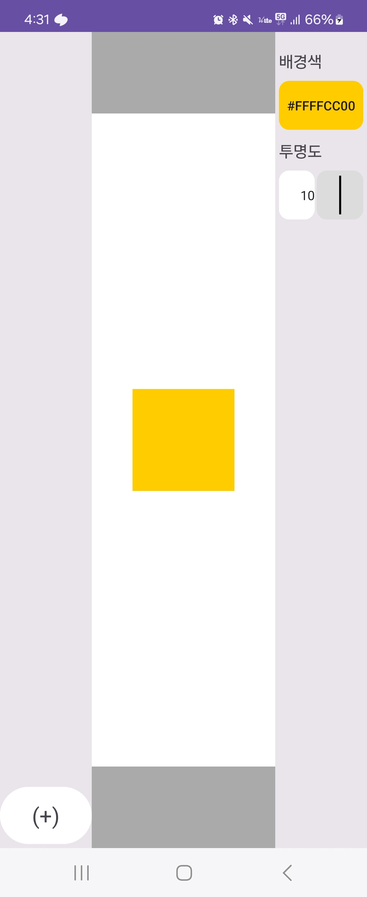
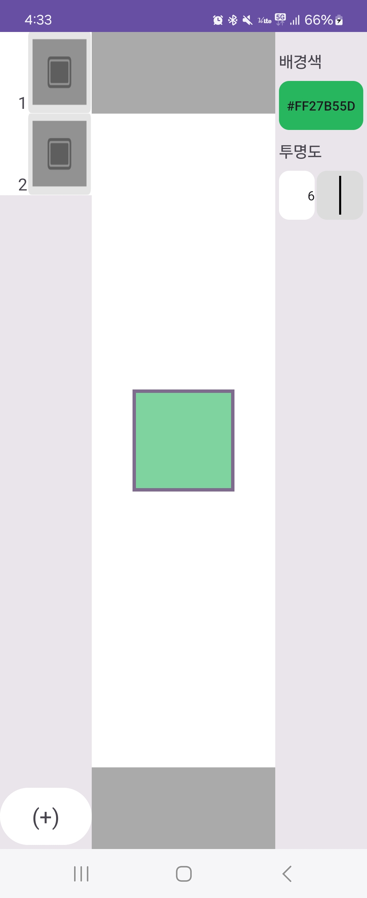

Slide-App
개인 프로젝트 (부트캠프 과정)
 
정사각형 슬라이드를 추가할 수 있는 앱
2024.01 ~ 2024.02
Overview
ConstraintLayout과 DataBinding을 사용하는 이유를 학습하기 위해 제작
Skills
RecyclerView, DataBinding, Retrofit, ViewModel, Livedata
Result & Issues
- 추가 버튼을 길게 누르면 서버에서 json 데이터를 가져와서 슬라이드 추가.
- UI 상태와 관련된 코드를 ViewModel에서 관리하도록 함.
- Binding Adapter를 사용해서 코드 가독성과 재사용성을 향상한 경험.
다음